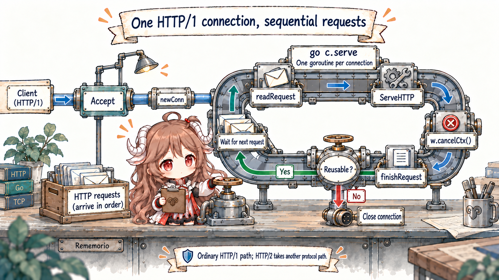
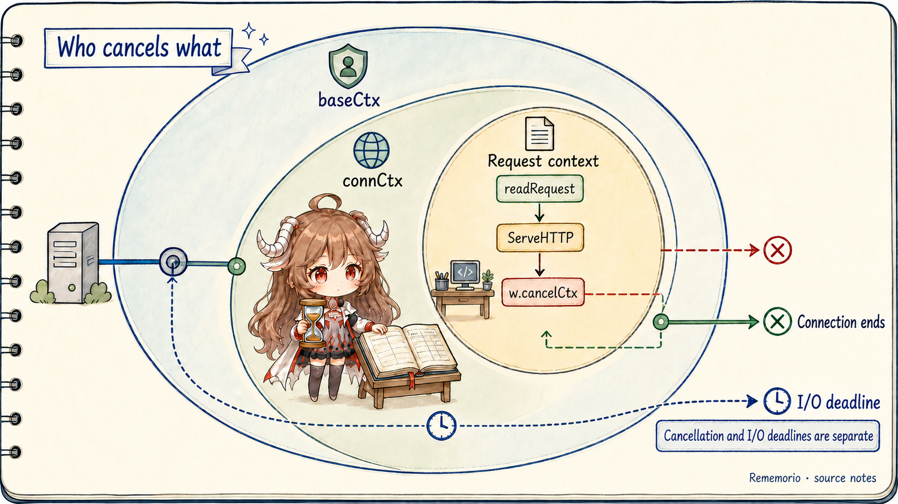
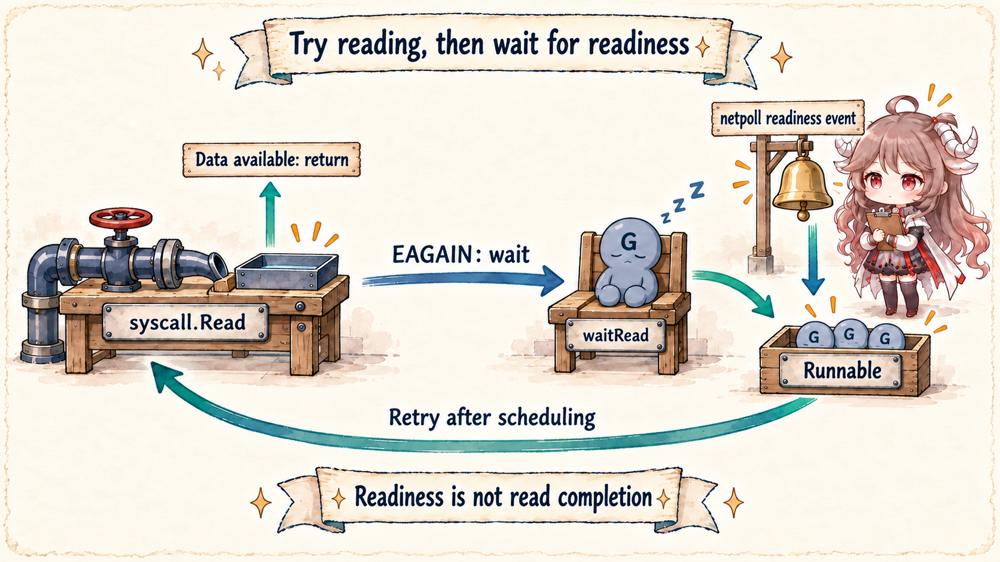

We will keep one scenario throughout the chapter. A small service named fetchd accepts several URLs,
fetches them concurrently under one deadline, collects status codes and response sizes, and returns JSON.
It is small enough to read in one sitting yet contains boundaries that appear in real services: inbound connections,
request contexts, child goroutines, an outbound connection pool, socket waits, and response writes.
Reading contract: the central claim comes first: application code sees blocking function calls; the standard library and runtime
remove network waiting from the execution thread. At the same time, net/http gives connections,
requests, and outbound exchanges different lifetimes. Understanding those owners is the shortest route to cancellation,
timeout, leak, and tail-latency bugs.
The evidence boundary is explicit. Direct source claims are pinned to the public Go 1.26.0 tag. API contracts come from the net/http documentation, context documentation, and Go diagnostics documentation. The main route is ordinary HTTP/1.x over pollable network descriptors. HTTP/2 branches at ALPN or an alternate RoundTripper. Windows uses IOCP, BSD and macOS use kqueue, and Linux uses epoll; the epoll section is one concrete platform implementation, not a universal source path.
By the end, a reader opening Go source for the first time should be able to answer five questions:
- Does
Server.Servecreate one goroutine per request or one per connection? - Where does
Request.Context()come from, and who cancels it after the handler returns? - How does
client.Doacquire or establish a reusable outbound connection? - When
Readhas no data, what happens to the goroutine, thread, and file descriptor? - For a slow request, should we first inspect the handler, connection pool, netpoll, scheduler, or GC?
1. Split the request by owner first
“One request” is a user-facing story, not one object in the source. Inside the process it crosses at least five owners. Each owns different state and ends at a different moment.
| Layer | Main owner | Owned state | Typical end condition |
|---|---|---|---|
| Inbound listener | http.Server |
Listener, server configuration, accept loop | Close / Shutdown closes the listener |
| Connection | net/http.conn |
Socket, buffers, TLS, keep-alive state | Peer close, protocol error, idle timeout, shutdown |
| Request | response + handler |
Request, request context, response state |
ServeHTTP returns or the connection ends |
| Outbound exchange | Transport + persistConn |
Pool, dial, read/write loops, response body | Body closed/read, cancellation, broken connection |
| Network wait | internal/poll + runtime |
Poll descriptor, waiting goroutine, readiness event | I/O ready, deadline, descriptor close |
This table is also a debugging index. More connections do not automatically prove a goroutine leak. Ending a request
context does not imply that the TCP connection cannot be reused. A goroutine in IO wait is not necessarily
consuming an OS thread. Find the owner before interpreting the symptom.
// The request shape used throughout this series
GET /fetch?url=https://go.dev/&url=https://pkg.go.dev/net/http
incoming request
├─ request deadline: 1.5s
├─ child goroutine: fetch go.dev
├─ child goroutine: fetch pkg.go.dev
└─ JSON aggregation2. Make fetchd real before reading internals
The complete example lives in go-runtime/examples/fetchd. Its core handler uses only the standard library. It derives a 1.5-second context from the inbound request, starts a bounded number of goroutines, and gives every outbound request the same context.
func (h fetchHandler) ServeHTTP(w http.ResponseWriter, r *http.Request) {
targets := r.URL.Query()["url"]
ctx, cancel := context.WithTimeout(r.Context(), h.timeout)
defer cancel()
results := make(chan fetchResult, len(targets))
for _, target := range targets {
go h.fetch(ctx, target, results)
}
batch := make([]fetchResult, 0, len(targets))
for range targets {
batch = append(batch, <-results)
}
json.NewEncoder(w).Encode(batch)
}
Three constraints are intentional. First, at most eight URLs are accepted, so “one goroutine per input” cannot become
unbounded amplification. Second, the result channel is buffered to the task count, so a future early return does not
immediately strand every child at its send. Third, NewRequestWithContext carries inbound cancellation into
the outbound Transport.
transport := http.DefaultTransport.(*http.Transport).Clone()
transport.MaxConnsPerHost = 16
transport.MaxIdleConnsPerHost = 8
transport.IdleConnTimeout = 90 * time.Second
transport.ResponseHeaderTimeout = time.Second
server := &http.Server{
Addr: ":8080",
Handler: handler,
ReadHeaderTimeout: 2 * time.Second,
WriteTimeout: 3 * time.Second,
IdleTimeout: 60 * time.Second,
}These are not universal production defaults. They make boundaries visible: the server limits header reads, response writes, and idle connections; the client limits per-host connections, idle reuse, and response-header waiting. Real values must follow traffic, upstream SLOs, body sizes, and retry policy.
3. Server.Serve accepts connections
ListenAndServe performs two essential actions: net.Listen("tcp", addr), then hands the listener
to Server.Serve. The actual concurrency boundary sits in the accept loop.
// net/http/server.go, reduced to the main route
ctx := context.WithValue(baseCtx, ServerContextKey, s)
for {
rw, err := l.Accept()
// shutdown and temporary accept-error handling omitted
connCtx := ctx
if cc := s.ConnContext; cc != nil {
connCtx = cc(connCtx, rw)
}
c := s.newConn(rw)
c.setState(c.rwc, StateNew, runHooks)
go c.serve(connCtx)
}
The go appears in front of c.serve, so the direct HTTP/1 fact is:
the base service goroutine is created per connection, not per request. Ten sequential keep-alive requests
on one TCP connection reuse that connection service path. Ten simultaneous connections create ten such paths.

Why the HTTP/1 handler runs in the connection goroutine
After TLS routing and buffer setup, conn.serve enters its HTTP/1 loop. The key call is not
go handler.ServeHTTP(...); it calls the handler directly.
for {
w, err := c.readRequest(ctx)
// parsing and error responses omitted
inFlightResponse = w
serverHandler{c.server}.ServeHTTP(w, w.req)
inFlightResponse = nil
w.cancelCtx()
w.finishRequest()
if !w.shouldReuseConnection() {
return
}
c.setState(c.rwc, StateIdle, runHooks)
c.bufr.Peek(4) // wait for the next request to arrive
}
The source comment explains the choice: ordinary HTTP/1 cannot read the next request while the current response is still
being produced, so another handler goroutine would add ownership without useful protocol concurrency. Application code
may create child goroutines as fetchd does, but that is handler-owned concurrency; it must bound work,
propagate cancellation, and collect results. HTTP/2 multiplexing follows a different path.
The panic boundary belongs to the connection owner
A defer at the top of conn.serve recovers ordinary panics, records the current goroutine stack, and closes a
non-hijacked connection. ErrAbortHandler is the special no-stack signal. This protects the HTTP connection
loop; it is not a transaction that rolls back external side effects already performed by the handler.
4. How Request.Context is installed and canceled
Request cancellation does not begin at the call to r.Context(). A connection context sits above it, outbound
work sits below it, and the source links the lifetimes with nested contexts.

readRequest creates the request cancel function
Server.Serve obtains a root from BaseContext; ConnContext can attach values for one
connection. conn.serve adds context.WithCancel and defers its cancel until the connection service
ends. After parsing and validating request headers, readRequest creates the inner request context.
ctx, cancelCtx := context.WithCancel(ctx)
req.ctx = ctx
req.RemoteAddr = c.remoteAddr
req.TLS = c.tlsState
w = &response{
conn: c,
cancelCtx: cancelCtx,
req: req,
reqBody: req.Body,
// ...
}
The handler never receives the cancel function; response stores it. After the handler returns, the connection
loop calls w.cancelCtx(). Background work that keeps the request context therefore observes Done
after handler return. Work that must outlive a request belongs in a queue or worker with an independent lifetime, not in a
goroutine that silently ignores cancellation.
Cancellation, request deadlines, and socket deadlines differ
fetchd adds a 1.5-second business deadline with context.WithTimeout.
http.Server.ReadHeaderTimeout and WriteTimeout are translated by readRequest into
SetReadDeadline and SetWriteDeadline on the connection. Those socket deadlines do not guarantee
that r.Context().Deadline() exposes the same time.
| Signal | Set by | First observer | Application response |
|---|---|---|---|
| Request context cancellation | Handler return, disconnect, or explicit parent cancel | Business work and Transport waiting on ctx.Done() |
Stop derived work and return the appropriate cause |
| Business deadline | context.WithTimeout |
The context tree | Apply one budget to the call tree |
| I/O deadline | http.Server / net.Conn |
Socket read or write | Turn network waiting into a timeout error; do not replace business cancellation |
5. After the handler, outbound work enters Transport
serverHandler.ServeHTTP is deliberately thin. It selects the configured Server.Handler, falls
back to DefaultServeMux, and calls handler.ServeHTTP. In fetchd, that enters our
handler and eventually reaches h.client.Do(req).
func (sh serverHandler) ServeHTTP(rw ResponseWriter, req *Request) {
handler := sh.srv.Handler
if handler == nil {
handler = DefaultServeMux
}
handler.ServeHTTP(rw, req)
}RoundTrip gets a connection, then selects the protocol path
Client.Do owns redirects, cookies, and other higher-level behavior. One HTTP exchange reaches
Transport.RoundTrip. In Go 1.26 the exported method validates its receiver and enters roundTrip,
whose loop checks the request and context, computes the connection method, obtains a connection, then selects HTTP/2 or
HTTP/1 persistConn.
for {
select {
case <-ctx.Done():
return nil, context.Cause(ctx)
default:
}
treq := &transportRequest{Request: req, ctx: ctx, cancel: cancel}
cm, err := t.connectMethodForRequest(treq)
pconn, err := t.getConn(treq, cm)
if pconn.alt != nil {
resp, err = pconn.alt.RoundTrip(req) // HTTP/2 or another alternate path
} else {
resp, err = pconn.roundTrip(treq) // HTTP/1
}
}
getConn first tries an idle connection, then queues a dial. With MaxConnsPerHost, a request may
wait in a per-host queue before any DNS or socket work begins. Many goroutines near getConn in a profile do not
prove slow dialing; connection limits and upstream latency may be building a queue together.
The source reveals a subtler ownership split. The dial context uses context.WithoutCancel to retain request
values while temporarily detaching from that request's cancellation because another request may reuse the connection.
wantConn still has its own cancel path, and the caller stops waiting on treq.ctx.Done().
“This request stopped waiting” and “this connection is no longer worth establishing” are related but separate decisions.
Once HTTP/1 obtains a persistConn, roundTrip sends writes to writech and response waits
to reqch. The connection's read and write loops own the socket while the calling goroutine waits for a response
or cancellation. A synchronous-looking client.Do therefore sits above a pool, dial goroutines, and persistent
connection loops.
6. Beneath blocking Read, the goroutine returns the thread
This is the part often compressed into “Go uses nonblocking I/O.” Application and standard-library code still use a
blocking interface: if no response data exists, Read waits. For a pollable network descriptor, the bottom layer
first attempts a nonblocking syscall. Only EAGAIN transfers the wait to the poller.

netFD delegates the connection to internal/poll.FD
net.(*netFD).Read is a thin wrapper. The retry loop lives in internal/poll.(*FD).Read.
for {
n, err := ignoringEINTRIO(syscall.Read, fd.Sysfd, p)
if err != nil {
n = 0
if err == syscall.EAGAIN && fd.pd.pollable() {
if err = fd.pd.waitRead(fd.isFile); err == nil {
continue
}
}
}
return n, fd.eofError(n, err)
}
If the first syscall finds data, it returns immediately and never parks the goroutine. Only when the kernel says the call
would block does waitRead enter pollDesc.wait('r'). Netpoll is not a mandatory central queue for
every read and write; the syscall fast path matters.
runtime_pollWait is the narrow bridge into the runtime
internal/poll declares runtime_pollWait; the runtime supplies it through go:linkname.
The implementation first checks close and deadline state, then netpollblock places the current goroutine in the
poll descriptor's read or write wait slot.
// internal/poll
res := runtime_pollWait(pd.runtimeCtx, mode)
// runtime
func poll_runtime_pollWait(pd *pollDesc, mode int) int {
if errcode := netpollcheckerr(pd, int32(mode)); errcode != pollNoError {
return errcode
}
for !netpollblock(pd, int32(mode), false) {
// recheck after deadline/readiness races
}
return pollNoError
}Parking a goroutine is not sleeping a thread. Once the G is waiting, the M can re-enter scheduling and run another runnable G on a P. This is one reason many network waits can coexist. The cost does not vanish; it moves from one-thread-per-wait to goroutine stacks, poll descriptors, connection state, timers, and wake-up scheduling.
How a readiness event reaches the scheduler
On Linux, runtime.netpoll calls epollwait, maps each event back to a pollDesc, and lets
netpollready collect goroutines that can run. findRunnable performs a nonblocking network poll and,
when no other work exists, may block with a delay. It transitions one G from _Gwaiting to
_Grunnable and injects the remaining list into runnable queues.
// Linux: runtime/netpoll_epoll.go
n, errno := linux.EpollWait(epfd, events[:], int32(len(events)), waitms)
// ...
delta += netpollready(&toRun, pd, mode)
// scheduler: runtime/proc.go
list, delta := netpoll(0)
gp := list.pop()
injectglist(&list)
casgstatus(gp, _Gwaiting, _Grunnable)
When the goroutine resumes, internal/poll.FD.Read returns from waitRead and retries the syscall.
Epoll readiness is not treated as a guarantee that this read must succeed; readiness can change before the G runs, so the
retry loop is part of the contract.
7. Where scheduling and GC belong on this route
This first chapter establishes owners rather than turning the scheduler and GC into encyclopedias. For our request, the
scheduler runs accept, connection, handler, and Transport goroutines; switches away when they wait on channels, mutexes,
timers, or netpoll; then arranges ready Gs on an executable P/M combination. schedule → findRunnable is the
later entry point for G-M-P, local and global run queues, work stealing, and preemption.
GC crosses every allocation on the path. Request parsing creates headers, URLs, and response state. JSON aggregation creates slices and strings. Transport and the pool retain request and connection objects. Escape, heap growth, concurrent marking, and GC assist can affect CPU and tail latency. But observing a GC interval does not prove that GC caused one slow request; profiles, traces, and runtime metrics must establish the relationship.
A useful first split: many network waits with low CPU often produce IO wait stacks; many runnable goroutines
with saturated CPU point toward scheduling or computation; rising allocation rate, heap, and GC CPU together justify a
deeper allocation and collection investigation.
8. Choose production evidence by symptom
Source reading should not make an incident start at line one of server.go. Start with evidence selected for the
symptom, then map the observation back to the owner route.
| Symptom | Inspect first | Likely owner | Premature conclusion to avoid |
|---|---|---|---|
| Tail latency rises; CPU stays low | Trace, goroutine profile, httptrace, upstream phase latency |
Pool queue, DNS/dial, response headers/body, netpoll | “Many goroutines mean a slow scheduler” |
| CPU remains saturated | CPU profile, trace runnable latency | Handler algorithm, serialization, lock contention, GC assist | “An HTTP service must be I/O-bound” |
| Goroutine count only grows | Repeated goroutine profiles, creation stacks, blocking sites | Unjoined children, channels, unclosed response bodies | “The runtime garbage-collects goroutines” |
| Connections or FDs near the limit | Connection states, Transport settings, body close behavior, OS FD metrics | Listener, idle pool, upstream connections, leaks | “Raising ulimit completes the fix” |
| Memory and GC CPU rise together | Heap/alloc profiles, runtime metrics, trace GC intervals | Parsing, aggregation, buffers, caches, connection state | “Lower GOGC is always faster” |
| Shared state fails intermittently | go test -race, minimal reproduction, owner design | Handler children, shared caches or maps | “Adding sleep proves there is no race” |
Each diagnostic tool has an observation boundary. Pprof aggregates samples and answers “where are resources spent?” Trace preserves temporal relationships among goroutines, scheduling, network blocking, syscalls, and GC and answers “why did this work not run then?” The race detector instruments memory access for concurrency conflicts and is not a performance profile. Source gives a mechanism hypothesis; tools provide runtime evidence.
9. Keep all eight chapters on the same request
The series will not switch among eight unrelated demos. Later chapters keep fetchd and the same production
request, enlarge one owner at a time, and add a reproducible experiment plus verified source.
| Chapter | Core question | Source entry | Experiment |
|---|---|---|---|
| I | How one request crosses the standard library and runtime | net/http, internal/poll, runtime |
Complete fetchd request |
| II | What does a Go value actually copy? | Slices, maps, interfaces, method sets, ABI | Aliasing, growth, escape |
| III | Where does a goroutine actually run? | newproc, schedule, findRunnable |
Runnable latency and preemption |
| IV | When should we use channels or locks? | Channel, sema, mutex, select | Backpressure, contention, starvation |
| V | How should a request end? | Context, timers, net/http cancellation | Timeout, cancellation, goroutine leaks |
| VI | Why does an allocation reach the heap? | Compiler escape, allocator, GC | -gcflags=-m and alloc profiles |
| VII | Why is net/http fast, and why does it stall? |
Transport, persistConn, HTTP/2 | Connection pools and slow upstreams |
| VIII | How do we diagnose Go performance with evidence? | Pprof, trace, runtime metrics, race | A complete performance investigation |
The first chapter should leave three reusable rules, not a pile of function names:
find the lifecycle owner; separate the synchronous API from the waiting mechanism underneath; validate source
hypotheses with runtime evidence. Chapter II is now available: it begins with fetchd's URL slice, result channel, and
JSON aggregation to ask which bytes Go value semantics copy and which underlying state remains shared.
Source and documentation references
- Go 1.26 release notes overview
- net/http package documentation
- context package documentation
- Diagnostics in the Go ecosystem
- Go Concurrency Patterns: Context
- ListenAndServe and Server.Serve
- conn.serve
- conn.readRequest
- serverHandler.ServeHTTP
- Transport.RoundTrip
- Transport.roundTrip
- getConn and dial queue
- persistConn.roundTrip
- internal/poll.FD.Read
- pollDesc.wait
- poll_runtime_pollWait
- Linux epoll netpoll implementation
- findRunnable and nonblocking netpoll